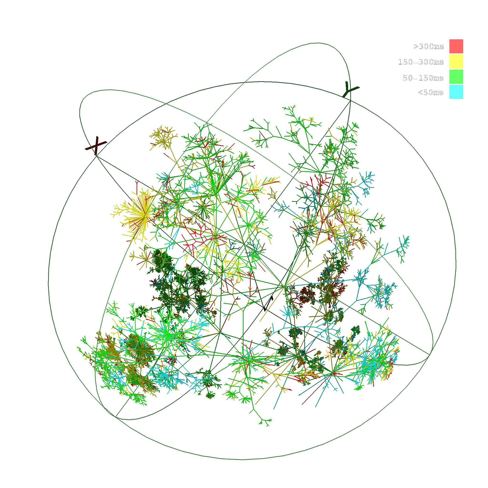

Die auf den Wolken lebenden Götter prägten über Tausende von Jahren unser Leben und unser Weltbild. In
der zweiten Hälfte des 20. Jahrhunderts lebten wir im Schatten einer anderen Wolke: der Pilzwolke der
Atombombe. Wird nun die Cloud der Informationsnetze zur utopischen Metapher der vernetzten Welt?
Der fruchtbare Halbmond, in dem die neolithische Revolution begann und sich auf die Welt ausbreitete,
veränderte radikal die Lebensweise und das Weltbild der Menschen. Die Menschen orientierten sich an der
Position von Mond, Sonne und Sternen, um den Wandel der Jahreszeiten zu bestimmen und konnten durch ein
besseres Verständnis der klimatischen Bedingungen sowie des Wetters eine landwirtschaftliche Gesellschaft
aufbauen. Anu, der älteste und wichtigste Gott der Sumerer, der den ersten Staat der Menschheitsgeschichte
begründete, ist der Gott des Himmels. Er ist das älteste Beispiel, das mit dem Himmelsvater-Konzept der
vergleichenden Mythologie verbunden ist. Die Himmel – Land – Wasser Triade entsprang den Prioritäten der
Agrargesellschaft.
Die Zunahme der landwirtschaftlichen Produktion und der enorme Zuwachs der Bevölkerung führten zu einer
unvermeidlichen Entwicklung: Schrift und Datenspeicherung.
Der sich ausweitende Handel brachte das menschliche Gedächtnis an seine Grenzen und es bedarf der Schrift zum
Zwecke von Aufzeichnungen. Die ältesten schriftlichen Dokumente der Geschichte stellen verschiedene
Rechnungen dar. Mit dem Aufkommen der Schrift gesellte sich zu den anderen Göttern ein neuer: Nabu war der
literarische Gott der Sumerer und in seinen Tempeln befanden sich große Archive mit Keilschrifttafeln. Das
heutige Pendant zu diesen monumentalen Gebäuden sind unsere Datenzentren. Beide sind die höchste Ebene der
zentralen Datenspeichertechnologie der jeweiligen Zeit. Diese architektonische und funktionale Ähnlichkeit
zwischen ihnen erinnert uns daran, dass die Datenverarbeitung und -speicherung seit Jahrtausenden die Quelle
der Macht und Autorität ist.
Tablet V of the Epic of Gilgamesh
Der literarische Gebrauch von Schrift wird deutlich später kommen. Das älteste literarische Werk, das
Gilgamesch-Epos, ist die Geschichte eines Königs, der Unsterblichkeit suchte. Infolge verschiedener Abenteuer
wird der König akzeptieren, dass er sterben wird, und er wird zu dem Schluss kommen, dass die wahre
Unsterblichkeit darin besteht, dass sein Name von zukünftigen Generationen erinnert wird. Die Unsterblichkeit
von Gilgamesch scheint vorerst zu funktionieren. Nach 5000 Jahren lesen wir seine Geschichte noch heute.
Anu, der große Himmelsgott der Sumerer, inspirierte später viele verschiedene Glaubenssysteme und die Fiktion
der „Göttlichkeit des Himmels“ verwandelte sich in verschiedene Erzählungen und Formen von Kultur zu Kultur.
Zeus, der wichtigste und mächtigste Gott des antiken griechischen Glaubens, ist in ähnlicher Weise der
Herrscher des Himmels. Zeus wird besonders mit Wetterbedingungen wie Blitzen und Stürmen in Verbindung
gebracht. Er wird häufig sitzend auf seinem Thron auf Wolken dargestellt, in der Hand einen Blitz haltend.
In den monotheistischen Religionen wird trotz des Glaubens, dass Gott überall ist, dieser immer noch, auf
alte Traditionen Bezug nehmend, mit Himmel und Wetter in Verbindung gebracht. Alle abrahamischen Religionen
gehen davon aus, dass Gott auf dem Thron im Himmel sitzt. Besonders in der christlichen Ikonographie können
wir viele verschiedene künstlerische Ausführungen des Himmels und der Wolke als Landschaft beobachten. Gott
wird manchmal als menschliche Form dargestellt, die auf den Wolken sitzt, und manchmal als Lichtstrahl oder
Auge, das aus den Wolken kommt.
The central icon of the atomic culture is the mushroom cloud, rising above the lush tropical
atolls of the South Pacific or the wastelands of the Great American Desert.1 Today it has become so
deeply imprinted in the myths and matrices of the postwar era that it has come to seem natural, a
fundamental, even a necessary aspect of everyday life. But the atomic explosion was not always an
inextricable part of the life of the planet. Indeed, it arrived as something close to what Roland Barthes
has called a "pure sign"—a visual icon so unprecedented that, for a moment at least, it lay outside the
webs of signification that comprised a watching culture. Peter B. Hales - Atomic Sublime
Atomic Dawn, Many Times Noon’s Brightness, Greets a Nevada Family 20 Miles Away. — National
Geographic 1953
Die von den Göttern dominierte Gesellschaftsordnung begann sich vor einigen Jahrhunderten zu lösen und wurde
zu einer modernen Gesellschaft. Der Mensch, der der Autorität Gottes entronnen war, verkündete seine eigene
Göttlichkeit und verherrlichte sich. Denn die Glaubenssysteme, die seit Tausenden von Jahren die
Hauptgrundlage der Gesellschaftsordnung waren, reichten nicht aus, um alles allein zu erklären.
Der Humanismus erstarkte als Ergebnis vieler wissenschaftlicher und technologischer Fortschritte zu einer
neuen Weltanschauung und ein Zeitalter, in dem die theistische Weltanschauung dominierend war, kam zu einem
Ende. Die Größe des Menschen, der Wert von Emotionen, Gedanken und Erfahrungen trat in den Vordergrund. Aber
der Humanismus war wie andere Religionen in verschiedene Ansichten aufgeteilt. Das 20. Jahrhundert erlebte
den Kampf zwischen Ideologien wie Kommunismus, Liberalismus und Nationalsozialismus. Dieser Kampf löste auf
militärischer Ebene einige technologische Durchbrüche aus. In seinem jahrtausendelangen Kampf mit der Natur
hat der Mensch eine neue Kraft gewonnen, die als Meilenstein betrachtet werden kann: die Atomenergie.
Atomos, das im Altgriechischen „unteilbar“ bedeutet, konnte im 20. Jahrhundert schließlich geteilt werden,
und es wurde eine enorme Energie freigesetzt. Die ersten Atombombenexperimente, bei denen diese Technologie
zum ersten Mal eingesetzt wurde, zeigten die stärksten Bilder des Triumphs des Menschen des 20. Jahrhunderts
über die Natur: Die Pilzwolke wurde zu einem der mächtigsten Symbole des vergangenen Jahrhunderts, einem der
Wendepunkte der Menschheitsgeschichte.
Nach dem zweiten Weltkrieg lebte die Welt jahrelang im Schatten von Atomwaffen. Eine Paranoia im Nuklearkrieg
führte indirekt zu einem weiteren technologischen Durchbruch. Ein Kommunikationssystem namens ARPANET wurde
vom US-Verteidigungsministerium entwickelt, das als Vorläufer des Internets gilt. Basierend auf der Idee von
Paul Baran wurde dieses System nicht als zentralisierte Kommunikationsinfrastruktur, sondern als verteiltes
Netzwerk aufgebaut. Im Falle eines möglichen Atomkriegs wäre das Netzwerk widerstandsfähiger.
Nach dem Ende des Kalten Krieges, Anfang der 90er Jahre, kündigte das CERN-Labor das Internet an, ein
globales Netzwerk, an dem alle teilnehmen können. In kurzer Zeit wurde es zu einem riesigen Netzwerk, in dem
Milliarden von Menschen aktive TeilnehmerInnen waren. Schließlich entsprang eine neue Technologie namens
Cloud Computing, von der wir häufiger hören.

In den 90er Jahren, als sich das Internet zum ersten Mal auszubreiten begann, wurde in Diagrammen häufig eine
Cloud-Analogie verwendet, um die amorphe und sich ständig verändernde Struktur des Netzwerks zum Ausdruck zu
bringen. Cloud Computing wurde jedoch später als neues Datenspeichersystem eingeführt. Es handelt sich
hierbei um ein Netzwerk von Servern. Einige davon dienen der Online-Datenspeicherung, andere fungieren als
Plattform zum Datenaustausch. Es basiert auf der Idee der zentralen Datenspeicherung, durch die wir jederzeit
von allen Geräten aus Zugriff auf unsere Daten haben und diese teilen können. Die Clouds sind allgegenwärtig
und immer an unserer Seite. Wenn unser Computer gestohlen wird oder unsere Sicherungsfestplatten beschädigt
werden, ist ein erheblicher Teil unseres Speichers irgendwo in den Clouds mit der höchsten Sicherheit
geschützt. Wir speichern Daten nicht nur in den Clouds, sondern ermöglichen auch die Aufzeichnung und
Kontrolle unserer Netzwerkbewegungen, Vorlieben, Emotionen, Gedanken und mehr. Während wir unser gesamtes
Gedächtnis in die Clouds übertragen, haben diese bedeutende Informationen über unserer Daten- und
Netzwerkaktivitäten in der Hand.
Heute wird diese Analogie immer bedeutungsvoller. Wolken verwandeln sich in das Gehirn eines globalen
Organismus, in dem das gemeinsame Gedächtnis der gesamten Menschheit gespeichert wird und die Aktivitäten in
sozialen Netzwerken aufgezeichnet und analysiert werden können. Das globale Netzwerk entwickelt sich
allmählich zu einer unverzichtbaren Erweiterung des kollektiven Gedächtnisses der Menschheit. Wie bei
neuronalen Netzwerken entwickelt und transformiert es sich in unvorhersehbare Formen. Werden die Wolken
wieder wie früher zu den Plattformen, auf denen die Götter leben?


{kind=link}
{kind=link}